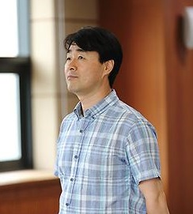

- Professor
- Students
- Alumni
Professor

E-mail : sukang@smu.ac.kr
Location : 상명대학교 월해관(M327), 미래백년관(R320)
강 상 욱 ( Sang-ug Kang )
E-mail : sukang@smu.ac.kr
Location : 상명대학교 월해관(M327), 미래백년관(R320)
학위
- 박사, 고려대학교 정보보호학과 (세부전공 : 멀티미디어 보안), 201108
- 석사, University of Southern California Electrical Engineering (세부전공 : 디지털 신호처리), 199512
- 학사, 경북대학교 전자공학과 (세부전공 : 전자공학), 199302
경력
- 학부장, 상명대학교 융합공과대학 SW융합학부, (2021.02~ )
- 학과장, 상명대학교 컴퓨터과학과, (2020.02~ )
수상
- 문화체육관광부장관상, 문화체육관광부, 20171201
- 방송통신위원장상 (장관상), 방송통신위원회, 20091231
프로젝트
- - 한국연구재단(중견연구자), 비정형(atypical) 객체의 인식, 생성, 이해를 통한 추상영역 인공지능 기술개발, (2022.03~2026.02)
- - 한국지능정보사회진흥원, 개방형 클라우드 플랫폼 교육센터 및 오픈랩 운영, (2021.09~2022.12)
- - 정보통신기획평가원, SW중심대학사업(상명대학교), (2019.09~2023.02)
- - 한국연구재단(중견연구자), 영상획득장치 특정을 위한 다중 메트릭 디지털 영상 포렌식 기술개발, (2018.03~2022.02)
- - 한국지능정보사회진흥원, 4차 산업혁명 시대의 소프트웨어(SW) 안전관리 기반연구, (2017.10~2021.12)
- - 한국연구재단(신진연구자), 사람의 기억 및 망각 구조에 기반한 능동형 디지털 영상 콘텐츠 저장 및 재생 기술 연구, (2015.07~2018.06)
- - 프레스토솔루션(주), 레이저 빔을 이용한 거리측정 시뮬레이터 개발, (2015.01~2015.08)
- - 저작권위원회, UCI 식별체계 국제표준화 연계 및 기술적 성능 강화방안 연구, (2014.06~2014.10)
- - 정보통신산업진흥원, 임베디드보안SW 석사과정, (2014.03~2016.08)
- - 중소기업청, 기능성 보안성 강화된 블랙박스 개발, (2013.12~2014.11)
- - 중소기업청, 복수의 TS 입력 채널을 동시에 IP 방송 채널로 재구성하는 트랜스코더 시스템 개발, (2013.12~2014.11)
- - 오리온기술(주), 블랙박스 제품 성능테스트 , (2013.09~2013.12)
- - 미래창조과학부, ITU전권회의 개최에 따른 부산지역 ICT 커뮤니티 연계방안, (2013.09~2013.11)
- - 방송통신전파진흥원, 국내 모바일 시장에서 WiBro 활성화 방안연구, (2011.05~2011.12)
- - 방통융합공공서비스 활성화 기반연구, 방송통신전파진흥원, (2011.01~2011.12)
- - 방통융합공공서비스 활성화 기반연구, 정보통신산업진흥원, (2010.01~2010.12)
- - IPTV융합서비스 및 콘텐츠 공유를 위한 개방형 IPTV 플랫폼 구축, 한국전자통신연구원, (2009.03~2012.02)
지식재산
- - 능동형 콘텐츠 재생 장치 및 능동형 콘텐츠 생성 장치(Active Contents Play Apparatus and Active Contents Creation Apparatus), 상명대학교산학협력단, 2018.12.19.
- - 능동형 콘텐츠 생성 방법 및 능동형 콘텐츠가 기록된 컴퓨터 판독가능 기록매체(Active Content Producing Method and Computer Readable Recording Medium Storing The Active Content), 상명대학교산학협력단, 2016.01.12.
- - 가역 정보 은닉을 이용한 차량용 블랙박스 영상의 무결성 검증 방법 및 그 장치(Method and Apparatus for Verifying Integrity of Vehicle Black Box Video using Reversible Data Hiding), 강상욱,오리온기술(주), 2013.12.06.
- - Apparatus for generation and restoring RTP packet and method therof , 삼성전자, 2007.04.29.
- - Video codec system, method for processing data between system and host system, and encoding/decoding control method in the system, 삼성전자, 2005.12.26.
- - Multimedia data decoding apparatus and method capable of varying capacity of buffers therein, 삼성전자, 2004.05.01.
- - Decoding method for reducing delay time, 삼성전자, 2004.02.02.
- - Method and apparatus for controlling buffering of audio stream, 삼성전자, 2003.02.02.
- - Video data transceiving device, and transceiving method thereof, 삼성전자, 2002.04.22.
- - Method for setting timer of cellular phone, 삼성전자, 2002.02.18.
- - Circuit for controlling execution of loop in digital signal processing chip , 삼성전자, 2000.10.10
- - Block matching method using a moving target window, 삼성전자, 2000.10.10.
- - Illumination control apparatus for controlling illumination by detecting external magnetic field, 삼성전자, 2000.05.05.
- - Apparatus and method for controlling the supply of power to a device when a power on/off , 삼성전자, 2000.02.01.